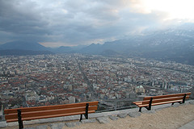
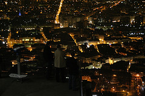
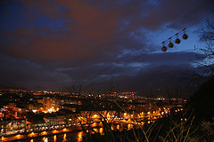
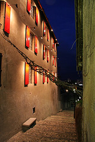

Grenoble, par slika
Grenoble je jedan od onih gradova u kojima bih voleo da živim. Pored sasvim optimalne veličine i fenomenalnog geografskog položaja, treba u obzir uzeti i činjenicu da je Grenoble veliki studentski centar, što znači da uvek ima zanimljivih dešavanja; da ne zaboravim, ujedno i jedan od bitnijih tehnoloških centara u Francuskoj.
Umesto priče, nekoliko fotografija: zanimljiva mesta koja sam imao prilike da vidim jed(i)nog slobodnog popodneva.
U centru grada, u blizini trga Grenette nalazi se i rue de Belgrade.
Uz obalu reke Isère (Izer), na keju Perrière, nalaze se jedna do druge desetine picerija, sa apsolutno fenomenalnom ponudom autentičnih italijanskih pizza koje se peku u pećima na drva. Inače, znatan deo današnjeg stanovništva Grenobla ima italijansko poreklo: Italijani su bili veoma cenjeni zbog svoje graditeljske umešnosti i u 18. i 19. veku masovno su dolazili u tada pogranični Grenoble iz susedne (tada samostalne) oblasti Savoie i Italije.
Jedna od najvećih atrakcija u Grenoblu je, svakako, staro utvrdjenje, La Bastille de Grenoble, i žičara kojom se do utvrdjenja stiže, Le Téléphérique.
U svakom "jajetu" ima mesta za 6 osoba, na putu ka vrhu sam, ipak, bio sam i to, čini mi se, jedini putnik u sva 4. Kako god, pogled je spektakularan, a najkritičniji deo je prelaz preko nosećeg stuba, opasno se ljulja - u tom trenutku sam odlučio da se vraćam pešaka ;)
 A kad već pričamo o sjajnom pogledu na grad, evo par fotografija sa tvrdjave. U okviru utvrdjenja je i par vrlo simpatičnih parkova.
Staza koja vodi do vrha utvrdjenja je krivudava, ali prilično široka i uredjena: do Muzeja i ulaska u grad ima 2,8km odnosno nešto vise od 35min laganog hoda. Pogled je i dalje sjajan tako da će povratak verovatno trajati nešto duže. A na kraju staze čeka Musée dauphionis, veoma šarmantno mesto, ispod Isère, a preko puta Grenoble, prestonica Alpa .
Komentari
PRELEPO PRELEPO PRELEPO :) BG ulica, wow! :) Jedino im žičare nisu sigurne kao u Švajcarskoj. :))
 RSS feed
RSS feed
 sadržaji se objavljuju pod
sadržaji se objavljuju pod
Pogled na strme litice i planinu u snegu iz centra-u takvom gradu bih volela da živim!
elektrokuhinja | 18.04.07 06:09